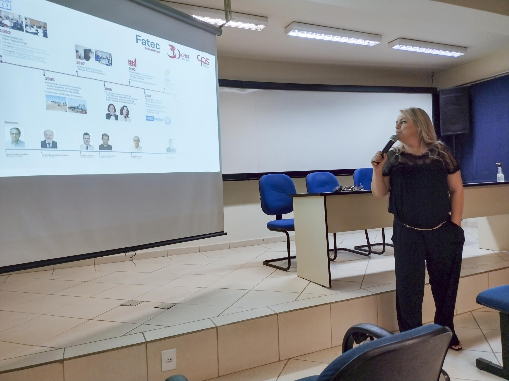
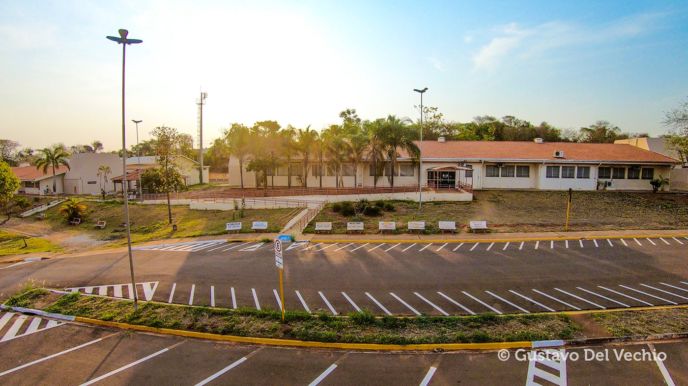

|
Fatec Taquaritinga:Faculdade de tecnologia de Taquaritinga | ||
|---|---|---|---|
| Instalações | |||
|  |  |
|
|
A Faculdade de Tecnologia de Taquaritinga é uma das 54 instituições públicas de ensino superior do Centro Paula Souza no Estado de São Paulo. Há mais de 20 anos, nossa missão é oferecer educação gratuita e de qualidade a alunos de Taquaritinga e região, formando tecnólogos em áreas privilegiadas no mercado de trabalho com nossos cursos presenciais Agronegócio, Análise e Desenvolvimento de Sistemas, Produção Industrial e Sistemas para Internet e com o curso à distância Gestão Empresarial (modalidade EAD). A qualidade dos nossos cursos é garantida pelo comprometimento e alta qualificação do corpo docente, formada quase que integralmente por professores especialistas, mestres e doutores, sempre engajados em atividades didáticas, projetos de pesquisa e de extensão de serviços.
Nossos cursos de graduação oferecem uma formação acadêmica sólida e atualizada, sempre objetivando o preparo para uma carreira profissional de sucesso. Nossos aulas e conteúdos são desenvolvidos de modo a proporcionar ao aluno a oportunidade de conhecer e colocar em prática conceitos fundamentais da sua área de formação. Para tanto, incentivamos nossos alunos a aproveitarem ao máximo as aulas práticas realizadas em nossos laboratórios de informática e de automação industrial, a participarem de visitas técnicas monitoradas a empresas e indústrias do ramo de sua formação acadêmica, a competirem em maratonas de computação e a se inscreverem em programas de intercâmbio, como o Ciência sem Fronteiras, o Intercâmbio Cultural do Centro Paula Souza e a parceria com a Universidade de FULDA, na Alemanha.